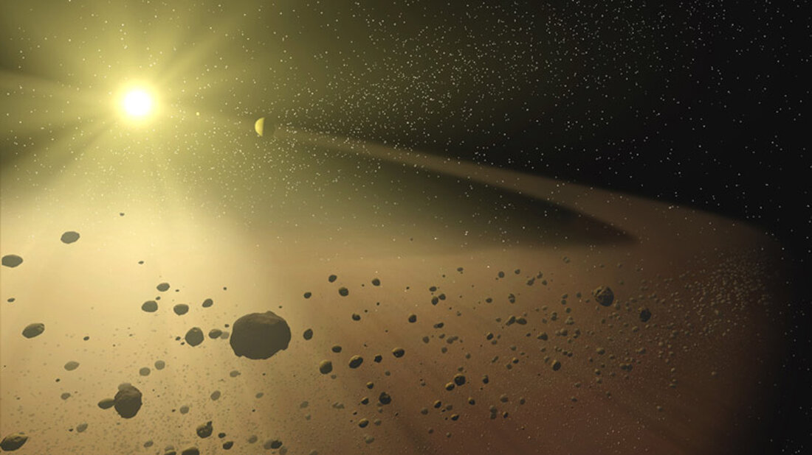

The year is 3087, as one of Earth's top astro pilots, you've been tasked with discovering and mapping new navigation to the planet Neptune. You've heard stories of reality bending and shifting the closer to the planet you get, but you paid no mind. Until you get to Neptune. As you enter the planet's orbit, you find an asteroid belt blocking your path to the landing zone. What do you do?
